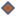

<!doctype html>
<html lang="en">
    <head>
        <meta charset="utf-8">
        <meta http-equiv="X-UA-Compatible" content="IE=edge">
        <meta name="viewport" content="initial-scale=1,user-scalable=no,maximum-scale=1,width=device-width">
        <meta name="mobile-web-app-capable" content="yes">
        <meta name="apple-mobile-web-app-capable" content="yes">
        <link rel="stylesheet" href="css/leaflet.css">
        <link rel="stylesheet" href="css/L.Control.Layers.Tree.css">
        <link rel="stylesheet" href="css/L.Control.Locate.min.css">
        <link rel="stylesheet" href="css/qgis2web.css">
        <link rel="stylesheet" href="css/fontawesome-all.min.css">
        <link rel="stylesheet" href="css/leaflet-control-geocoder.Geocoder.css">
        <link rel="stylesheet" href="css/leaflet-measure.css">
        <style>
        #map {
            width: 706px;
            height: 680px;
        }
        </style>
        <title>Carte des musées de Paris </title>
    </head>
    <body>
        <div id="map">
        </div>
        <script src="js/qgis2web_expressions.js"></script>
        <script src="js/leaflet.js"></script>
        <script src="js/L.Control.Layers.Tree.min.js"></script>
        <script src="js/L.Control.Locate.min.js"></script>
        <script src="js/leaflet-svg-shape-markers.min.js"></script>
        <script src="js/leaflet.rotatedMarker.js"></script>
        <script src="js/leaflet.pattern.js"></script>
        <script src="js/leaflet-hash.js"></script>
        <script src="js/Autolinker.min.js"></script>
        <script src="js/rbush.min.js"></script>
        <script src="js/labelgun.min.js"></script>
        <script src="js/labels.js"></script>
        <script src="js/leaflet-control-geocoder.Geocoder.js"></script>
        <script src="js/leaflet-measure.js"></script>
        <script src="data/LacommunedeParis_1.js"></script>
        <script src="data/LesespacesvertssurParis_2.js"></script>
        <script src="data/ReseauxhydroliquesurParis_3.js"></script>
        <script src="data/Route_4.js"></script>
        <script src="data/VoiefresurParis_5.js"></script>
        <script src="data/musee_paris_6.js"></script>
        <script>
        var map = L.map('map', {
            zoomControl:false, maxZoom:28, minZoom:1
        }).fitBounds([[48.805174490794386,2.2317844585267106],[48.93298095891214,2.43282166542603]]);
        var hash = new L.Hash(map);
        map.attributionControl.setPrefix('<a href="https://github.com/tomchadwin/qgis2web" target="_blank">qgis2web</a> &middot; <a href="https://leafletjs.com" title="A JS library for interactive maps">Leaflet</a> &middot; <a href="https://qgis.org">QGIS</a>');
        var autolinker = new Autolinker({truncate: {length: 30, location: 'smart'}});
        // remove popup's row if "visible-with-data"
        function removeEmptyRowsFromPopupContent(content, feature) {
         var tempDiv = document.createElement('div');
         tempDiv.innerHTML = content;
         var rows = tempDiv.querySelectorAll('tr');
         for (var i = 0; i < rows.length; i++) {
             var td = rows[i].querySelector('td.visible-with-data');
             var key = td ? td.id : '';
             if (td && td.classList.contains('visible-with-data') && feature.properties[key] == null) {
                 rows[i].parentNode.removeChild(rows[i]);
             }
         }
         return tempDiv.innerHTML;
        }
        // add class to format popup if it contains media
		function addClassToPopupIfMedia(content, popup) {
			var tempDiv = document.createElement('div');
			tempDiv.innerHTML = content;
			if (tempDiv.querySelector('td img')) {
				popup._contentNode.classList.add('media');
					// Delay to force the redraw
					setTimeout(function() {
						popup.update();
					}, 10);
			} else {
				popup._contentNode.classList.remove('media');
			}
		}
        var title = new L.Control({'position':'topleft'});
        title.onAdd = function (map) {
            this._div = L.DomUtil.create('div', 'info');
            this.update();
            return this._div;
        };
        title.update = function () {
            this._div.innerHTML = '<h2>Carte des musées de Paris </h2>';
        };
        title.addTo(map);
        var abstract = new L.Control({'position':'topleft'});
        abstract.onAdd = function (map) {
            this._div = L.DomUtil.create('div',
            'leaflet-control abstract');
            this._div.id = 'abstract'
                this._div.setAttribute("onmouseenter", "abstract.show()");
                this._div.setAttribute("onmouseleave", "abstract.hide()");
                this.hide();
                return this._div;
            };
            abstract.hide = function () {
                this._div.classList.remove("abstractUncollapsed");
                this._div.classList.add("abstract");
                this._div.innerHTML = 'i'
            }
            abstract.show = function () {
                this._div.classList.remove("abstract");
                this._div.classList.add("abstractUncollapsed");
                this._div.innerHTML = 'Cette carte offre une représentation détaillée de la ville de Paris. On y distingue ses nombreux espaces verts, véritables poumons urbains répartis à travers la capitale, tels que les parcs, jardins et bois qui rythment le paysage parisien. Les cours d’eau, notamment la Seine et ses affluents, sont également visibles, soulignant le lien étroit entre la ville et son fleuve historique. Le réseau routier est mis en évidence, illustrant la structure de la circulation parisienne. J’ai aussi intégré les lignes de tramway, éléments bien visibles du paysage urbain, qui serpentent en surface et desservent plusieurs quartiers périphériques. Contrairement au métro, majoritairement souterrain et donc invisible à première vue, le tramway s’inscrit visuellement dans l’environnement quotidien des habitants. <br /><br />Carte réalisée par Anissa EL OUARIACHI source : BD TOPO 2024, Data gouv : ministère de la culture, Opendata.paris, date : 18/ 04/ 2025 ';
        };
        abstract.addTo(map);
        var zoomControl = L.control.zoom({
            position: 'topleft'
        }).addTo(map);
        L.control.locate({locateOptions: {maxZoom: 19}}).addTo(map);
        var measureControl = new L.Control.Measure({
            position: 'topleft',
            primaryLengthUnit: 'meters',
            secondaryLengthUnit: 'kilometers',
            primaryAreaUnit: 'sqmeters',
            secondaryAreaUnit: 'hectares'
        });
        measureControl.addTo(map);
        document.getElementsByClassName('leaflet-control-measure-toggle')[0].innerHTML = '';
        document.getElementsByClassName('leaflet-control-measure-toggle')[0].className += ' fas fa-ruler';
        var bounds_group = new L.featureGroup([]);
        function setBounds() {
        }
        map.createPane('pane_OpenStreetMap_0');
        map.getPane('pane_OpenStreetMap_0').style.zIndex = 400;
        var layer_OpenStreetMap_0 = L.tileLayer('https://tile.openstreetmap.org/{z}/{x}/{y}.png', {
            pane: 'pane_OpenStreetMap_0',
            opacity: 0.519,
            attribution: '',
            minZoom: 1,
            maxZoom: 28,
            minNativeZoom: 0,
            maxNativeZoom: 19
        });
        layer_OpenStreetMap_0;
        map.addLayer(layer_OpenStreetMap_0);
        function pop_LacommunedeParis_1(feature, layer) {
            var popupContent = '<table>\
                    <tr>\
                        <td colspan="2"><strong>POPULATION</strong><br />' + (feature.properties['POPULATION'] !== null ? autolinker.link(String(feature.properties['POPULATION']).replace(/'/g, '\'').toLocaleString()) : '') + '</td>\
                    </tr>\
                    <tr>\
                        <td colspan="2"><strong>SURFACE_HA</strong><br />' + (feature.properties['SURFACE_HA'] !== null ? autolinker.link(String(feature.properties['SURFACE_HA']).replace(/'/g, '\'').toLocaleString()) : '') + '</td>\
                    </tr>\
                    <tr>\
                        <td colspan="2"><strong>CL_ARROND</strong><br />' + (feature.properties['CL_ARROND'] !== null ? autolinker.link(String(feature.properties['CL_ARROND']).replace(/'/g, '\'').toLocaleString()) : '') + '</td>\
                    </tr>\
                </table>';
            var content = removeEmptyRowsFromPopupContent(popupContent, feature);
			layer.on('popupopen', function(e) {
				addClassToPopupIfMedia(content, e.popup);
			});
			layer.bindPopup(content, { maxHeight: 400 });
        }

        function style_LacommunedeParis_1_0() {
            return {
                pane: 'pane_LacommunedeParis_1',
                opacity: 1,
                color: 'rgba(0,0,0,1.0)',
                dashArray: '',
                lineCap: 'butt',
                lineJoin: 'miter',
                weight: 2.0, 
                fill: true,
                fillOpacity: 1,
                fillColor: 'rgba(82,82,82,0.0)',
                interactive: true,
            }
        }
        map.createPane('pane_LacommunedeParis_1');
        map.getPane('pane_LacommunedeParis_1').style.zIndex = 401;
        map.getPane('pane_LacommunedeParis_1').style['mix-blend-mode'] = 'normal';
        var layer_LacommunedeParis_1 = new L.geoJson(json_LacommunedeParis_1, {
            attribution: '',
            interactive: true,
            dataVar: 'json_LacommunedeParis_1',
            layerName: 'layer_LacommunedeParis_1',
            pane: 'pane_LacommunedeParis_1',
            onEachFeature: pop_LacommunedeParis_1,
            style: style_LacommunedeParis_1_0,
        });
        bounds_group.addLayer(layer_LacommunedeParis_1);
        map.addLayer(layer_LacommunedeParis_1);
        function pop_LesespacesvertssurParis_2(feature, layer) {
            var popupContent = '<table>\
                    <tr>\
                        <td colspan="2"><strong>Espace_vert_sur_Paris</strong><br />' + (feature.properties['NATURE'] !== null ? autolinker.link(String(feature.properties['NATURE']).replace(/'/g, '\'').toLocaleString()) : '') + '</td>\
                    </tr>\
                </table>';
            var content = removeEmptyRowsFromPopupContent(popupContent, feature);
			layer.on('popupopen', function(e) {
				addClassToPopupIfMedia(content, e.popup);
			});
			layer.bindPopup(content, { maxHeight: 400 });
        }

        function style_LesespacesvertssurParis_2_0() {
            return {
                pane: 'pane_LesespacesvertssurParis_2',
                opacity: 1,
                color: 'rgba(56,128,54,1.0)',
                dashArray: '',
                lineCap: 'butt',
                lineJoin: 'miter',
                weight: 1.0, 
                fill: true,
                fillOpacity: 1,
                fillColor: 'rgba(77,175,74,1.0)',
                interactive: true,
            }
        }
        map.createPane('pane_LesespacesvertssurParis_2');
        map.getPane('pane_LesespacesvertssurParis_2').style.zIndex = 402;
        map.getPane('pane_LesespacesvertssurParis_2').style['mix-blend-mode'] = 'normal';
        var layer_LesespacesvertssurParis_2 = new L.geoJson(json_LesespacesvertssurParis_2, {
            attribution: '',
            interactive: true,
            dataVar: 'json_LesespacesvertssurParis_2',
            layerName: 'layer_LesespacesvertssurParis_2',
            pane: 'pane_LesespacesvertssurParis_2',
            onEachFeature: pop_LesespacesvertssurParis_2,
            style: style_LesespacesvertssurParis_2_0,
        });
        bounds_group.addLayer(layer_LesespacesvertssurParis_2);
        map.addLayer(layer_LesespacesvertssurParis_2);
        function pop_ReseauxhydroliquesurParis_3(feature, layer) {
            var popupContent = '<table>\
                    <tr>\
                        <td class="visible-with-data" id="ID" colspan="2"><strong>ID</strong><br />' + (feature.properties['ID'] !== null ? autolinker.link(String(feature.properties['ID']).replace(/'/g, '\'').toLocaleString()) : '') + '</td>\
                    </tr>\
                    <tr>\
                        <td class="visible-with-data" id="TOPONYME" colspan="2"><strong>TOPONYME</strong><br />' + (feature.properties['TOPONYME'] !== null ? autolinker.link(String(feature.properties['TOPONYME']).replace(/'/g, '\'').toLocaleString()) : '') + '</td>\
                    </tr>\
                    <tr>\
                        <td colspan="2"><strong>NOM</strong><br />' + (feature.properties['NOM'] !== null ? autolinker.link(String(feature.properties['NOM']).replace(/'/g, '\'').toLocaleString()) : '') + '</td>\
                    </tr>\
                    <tr>\
                        <th scope="row">SIREN_EPCI</th>\
                        <td class="visible-with-data" id="SIREN_EPCI">' + (feature.properties['SIREN_EPCI'] !== null ? autolinker.link(String(feature.properties['SIREN_EPCI']).replace(/'/g, '\'').toLocaleString()) : '') + '</td>\
                    </tr>\
                </table>';
            var content = removeEmptyRowsFromPopupContent(popupContent, feature);
			layer.on('popupopen', function(e) {
				addClassToPopupIfMedia(content, e.popup);
			});
			layer.bindPopup(content, { maxHeight: 400 });
        }

        function style_ReseauxhydroliquesurParis_3_0() {
            return {
                pane: 'pane_ReseauxhydroliquesurParis_3',
                opacity: 1,
                color: 'rgba(72,123,182,1.0)',
                dashArray: '',
                lineCap: 'square',
                lineJoin: 'bevel',
                weight: 3.0,
                fillOpacity: 0,
                interactive: true,
            }
        }
        map.createPane('pane_ReseauxhydroliquesurParis_3');
        map.getPane('pane_ReseauxhydroliquesurParis_3').style.zIndex = 403;
        map.getPane('pane_ReseauxhydroliquesurParis_3').style['mix-blend-mode'] = 'normal';
        var layer_ReseauxhydroliquesurParis_3 = new L.geoJson(json_ReseauxhydroliquesurParis_3, {
            attribution: '',
            interactive: true,
            dataVar: 'json_ReseauxhydroliquesurParis_3',
            layerName: 'layer_ReseauxhydroliquesurParis_3',
            pane: 'pane_ReseauxhydroliquesurParis_3',
            onEachFeature: pop_ReseauxhydroliquesurParis_3,
            style: style_ReseauxhydroliquesurParis_3_0,
        });
        bounds_group.addLayer(layer_ReseauxhydroliquesurParis_3);
        map.addLayer(layer_ReseauxhydroliquesurParis_3);
        function pop_Route_4(feature, layer) {
            var popupContent = '<table>\
                    <tr>\
                        <th scope="row">n_sq_tv</th>\
                        <td>' + (feature.properties['n_sq_tv'] !== null ? autolinker.link(String(feature.properties['n_sq_tv']).replace(/'/g, '\'').toLocaleString()) : '') + '</td>\
                    </tr>\
                    <tr>\
                        <th scope="row">c_niveau</th>\
                        <td>' + (feature.properties['c_niveau'] !== null ? autolinker.link(String(feature.properties['c_niveau']).replace(/'/g, '\'').toLocaleString()) : '') + '</td>\
                    </tr>\
                    <tr>\
                        <th scope="row">b_voiedup</th>\
                        <td>' + (feature.properties['b_voiedup'] !== null ? autolinker.link(String(feature.properties['b_voiedup']).replace(/'/g, '\'').toLocaleString()) : '') + '</td>\
                    </tr>\
                    <tr>\
                        <th scope="row">n_voieaddg</th>\
                        <td>' + (feature.properties['n_voieaddg'] !== null ? autolinker.link(String(feature.properties['n_voieaddg']).replace(/'/g, '\'').toLocaleString()) : '') + '</td>\
                    </tr>\
                    <tr>\
                        <th scope="row">c_suf1addg</th>\
                        <td>' + (feature.properties['c_suf1addg'] !== null ? autolinker.link(String(feature.properties['c_suf1addg']).replace(/'/g, '\'').toLocaleString()) : '') + '</td>\
                    </tr>\
                    <tr>\
                        <th scope="row">n_voieadfg</th>\
                        <td>' + (feature.properties['n_voieadfg'] !== null ? autolinker.link(String(feature.properties['n_voieadfg']).replace(/'/g, '\'').toLocaleString()) : '') + '</td>\
                    </tr>\
                    <tr>\
                        <th scope="row">c_suf1adfg</th>\
                        <td>' + (feature.properties['c_suf1adfg'] !== null ? autolinker.link(String(feature.properties['c_suf1adfg']).replace(/'/g, '\'').toLocaleString()) : '') + '</td>\
                    </tr>\
                    <tr>\
                        <th scope="row">n_voieaddd</th>\
                        <td>' + (feature.properties['n_voieaddd'] !== null ? autolinker.link(String(feature.properties['n_voieaddd']).replace(/'/g, '\'').toLocaleString()) : '') + '</td>\
                    </tr>\
                    <tr>\
                        <th scope="row">c_suf1addd</th>\
                        <td>' + (feature.properties['c_suf1addd'] !== null ? autolinker.link(String(feature.properties['c_suf1addd']).replace(/'/g, '\'').toLocaleString()) : '') + '</td>\
                    </tr>\
                    <tr>\
                        <th scope="row">n_voieadfd</th>\
                        <td>' + (feature.properties['n_voieadfd'] !== null ? autolinker.link(String(feature.properties['n_voieadfd']).replace(/'/g, '\'').toLocaleString()) : '') + '</td>\
                    </tr>\
                    <tr>\
                        <th scope="row">c_suf1adfd</th>\
                        <td>' + (feature.properties['c_suf1adfd'] !== null ? autolinker.link(String(feature.properties['c_suf1adfd']).replace(/'/g, '\'').toLocaleString()) : '') + '</td>\
                    </tr>\
                    <tr>\
                        <th scope="row">c_coinsee</th>\
                        <td>' + (feature.properties['c_coinsee'] !== null ? autolinker.link(String(feature.properties['c_coinsee']).replace(/'/g, '\'').toLocaleString()) : '') + '</td>\
                    </tr>\
                    <tr>\
                        <th scope="row">n_sq_vo</th>\
                        <td>' + (feature.properties['n_sq_vo'] !== null ? autolinker.link(String(feature.properties['n_sq_vo']).replace(/'/g, '\'').toLocaleString()) : '') + '</td>\
                    </tr>\
                    <tr>\
                        <th scope="row">objectid</th>\
                        <td>' + (feature.properties['objectid'] !== null ? autolinker.link(String(feature.properties['objectid']).replace(/'/g, '\'').toLocaleString()) : '') + '</td>\
                    </tr>\
                    <tr>\
                        <th scope="row">c_tvniv1</th>\
                        <td>' + (feature.properties['c_tvniv1'] !== null ? autolinker.link(String(feature.properties['c_tvniv1']).replace(/'/g, '\'').toLocaleString()) : '') + '</td>\
                    </tr>\
                    <tr>\
                        <th scope="row">c_tvniv2</th>\
                        <td>' + (feature.properties['c_tvniv2'] !== null ? autolinker.link(String(feature.properties['c_tvniv2']).replace(/'/g, '\'').toLocaleString()) : '') + '</td>\
                    </tr>\
                    <tr>\
                        <th scope="row">c_domofftv</th>\
                        <td>' + (feature.properties['c_domofftv'] !== null ? autolinker.link(String(feature.properties['c_domofftv']).replace(/'/g, '\'').toLocaleString()) : '') + '</td>\
                    </tr>\
                    <tr>\
                        <th scope="row">n_sq_co</th>\
                        <td>' + (feature.properties['n_sq_co'] !== null ? autolinker.link(String(feature.properties['n_sq_co']).replace(/'/g, '\'').toLocaleString()) : '') + '</td>\
                    </tr>\
                    <tr>\
                        <th scope="row">length</th>\
                        <td>' + (feature.properties['length'] !== null ? autolinker.link(String(feature.properties['length']).replace(/'/g, '\'').toLocaleString()) : '') + '</td>\
                    </tr>\
                </table>';
            var content = removeEmptyRowsFromPopupContent(popupContent, feature);
			layer.on('popupopen', function(e) {
				addClassToPopupIfMedia(content, e.popup);
			});
			layer.bindPopup(content, { maxHeight: 400 });
        }

        function style_Route_4_0() {
            return {
                pane: 'pane_Route_4',
                opacity: 1,
                color: 'rgba(136,136,136,1.0)',
                dashArray: '',
                lineCap: 'square',
                lineJoin: 'bevel',
                weight: 1.0,
                fillOpacity: 0,
                interactive: true,
            }
        }
        map.createPane('pane_Route_4');
        map.getPane('pane_Route_4').style.zIndex = 404;
        map.getPane('pane_Route_4').style['mix-blend-mode'] = 'normal';
        var layer_Route_4 = new L.geoJson(json_Route_4, {
            attribution: '',
            interactive: true,
            dataVar: 'json_Route_4',
            layerName: 'layer_Route_4',
            pane: 'pane_Route_4',
            onEachFeature: pop_Route_4,
            style: style_Route_4_0,
        });
        bounds_group.addLayer(layer_Route_4);
        map.addLayer(layer_Route_4);
        function pop_VoiefresurParis_5(feature, layer) {
            var popupContent = '<table>\
                    <tr>\
                        <td colspan="2"><strong>ID</strong><br />' + (feature.properties['ID'] !== null ? autolinker.link(String(feature.properties['ID']).replace(/'/g, '\'').toLocaleString()) : '') + '</td>\
                    </tr>\
                    <tr>\
                        <td colspan="2"><strong>NATURE</strong><br />' + (feature.properties['NATURE'] !== null ? autolinker.link(String(feature.properties['NATURE']).replace(/'/g, '\'').toLocaleString()) : '') + '</td>\
                    </tr>\
                    <tr>\
                        <td colspan="2"><strong>ETAT</strong><br />' + (feature.properties['ETAT'] !== null ? autolinker.link(String(feature.properties['ETAT']).replace(/'/g, '\'').toLocaleString()) : '') + '</td>\
                    </tr>\
                </table>';
            var content = removeEmptyRowsFromPopupContent(popupContent, feature);
			layer.on('popupopen', function(e) {
				addClassToPopupIfMedia(content, e.popup);
			});
			layer.bindPopup(content, { maxHeight: 400 });
        }

        function style_VoiefresurParis_5_0(feature) {
            switch(String(feature.properties['NATURE'])) {
                case 'Tramway':
                    return {
                pane: 'pane_VoiefresurParis_5',
                opacity: 1,
                color: 'rgba(255,1,1,1.0)',
                dashArray: '',
                lineCap: 'round',
                lineJoin: 'round',
                weight: 3.0,
                fillOpacity: 0,
                interactive: true,
            }
                    break;
                case 'LGV':
                    return {
                pane: 'pane_VoiefresurParis_5',
                opacity: 1,
                color: 'rgba(0,0,0,1.0)',
                dashArray: '',
                lineCap: 'square',
                lineJoin: 'bevel',
                weight: 2.0,
                fillOpacity: 0,
                interactive: true,
            }
                    break;
            }
        }
        map.createPane('pane_VoiefresurParis_5');
        map.getPane('pane_VoiefresurParis_5').style.zIndex = 405;
        map.getPane('pane_VoiefresurParis_5').style['mix-blend-mode'] = 'normal';
        var layer_VoiefresurParis_5 = new L.geoJson(json_VoiefresurParis_5, {
            attribution: '',
            interactive: true,
            dataVar: 'json_VoiefresurParis_5',
            layerName: 'layer_VoiefresurParis_5',
            pane: 'pane_VoiefresurParis_5',
            onEachFeature: pop_VoiefresurParis_5,
            style: style_VoiefresurParis_5_0,
        });
        bounds_group.addLayer(layer_VoiefresurParis_5);
        map.addLayer(layer_VoiefresurParis_5);
        function pop_musee_paris_6(feature, layer) {
            var popupContent = '<table>\
                    <tr>\
                        <td colspan="2"><strong>Identifiant </strong><br />' + (feature.properties['Identifian'] !== null ? autolinker.link(String(feature.properties['Identifian']).replace(/'/g, '\'').toLocaleString()) : '') + '</td>\
                    </tr>\
                    <tr>\
                        <td colspan="2"><strong>Commune</strong><br />' + (feature.properties['Commune'] !== null ? autolinker.link(String(feature.properties['Commune']).replace(/'/g, '\'').toLocaleString()) : '') + '</td>\
                    </tr>\
                    <tr>\
                        <td colspan="2"><strong>Nom du musée </strong><br />' + (feature.properties['Nom offici'] !== null ? autolinker.link(String(feature.properties['Nom offici']).replace(/'/g, '\'').toLocaleString()) : '') + '</td>\
                    </tr>\
                    <tr>\
                        <td colspan="2"><strong>Adresse</strong><br />' + (feature.properties['Adresse'] !== null ? autolinker.link(String(feature.properties['Adresse']).replace(/'/g, '\'').toLocaleString()) : '') + '</td>\
                    </tr>\
                    <tr>\
                        <td colspan="2"><strong>Lieu</strong><br />' + (feature.properties['Lieu'] !== null ? autolinker.link(String(feature.properties['Lieu']).replace(/'/g, '\'').toLocaleString()) : '') + '</td>\
                    </tr>\
                    <tr>\
                        <td colspan="2"><strong>Téléphones</strong><br />' + (feature.properties['Téléphon'] !== null ? autolinker.link(String(feature.properties['Téléphon']).replace(/'/g, '\'').toLocaleString()) : '') + '</td>\
                    </tr>\
                    <tr>\
                        <td colspan="2"><strong>URL</strong><br />' + (feature.properties['URL'] !== null ? autolinker.link(String(feature.properties['URL']).replace(/'/g, '\'').toLocaleString()) : '') + '</td>\
                    </tr>\
                </table>';
            var content = removeEmptyRowsFromPopupContent(popupContent, feature);
			layer.on('popupopen', function(e) {
				addClassToPopupIfMedia(content, e.popup);
			});
			layer.bindPopup(content, { maxHeight: 400 });
        }

        function style_musee_paris_6_0() {
            return {
                pane: 'pane_musee_paris_6',
                shape: 'diamond',
                radius: 8.8,
                opacity: 1,
                color: 'rgba(50,87,128,1.0)',
                dashArray: '',
                lineCap: 'butt',
                lineJoin: 'miter',
                weight: 2.0,
                fill: true,
                fillOpacity: 1,
                fillColor: 'rgba(162,102,63,1.0)',
                interactive: true,
            }
        }
        map.createPane('pane_musee_paris_6');
        map.getPane('pane_musee_paris_6').style.zIndex = 406;
        map.getPane('pane_musee_paris_6').style['mix-blend-mode'] = 'normal';
        var layer_musee_paris_6 = new L.geoJson(json_musee_paris_6, {
            attribution: '',
            interactive: true,
            dataVar: 'json_musee_paris_6',
            layerName: 'layer_musee_paris_6',
            pane: 'pane_musee_paris_6',
            onEachFeature: pop_musee_paris_6,
            pointToLayer: function (feature, latlng) {
                var context = {
                    feature: feature,
                    variables: {}
                };
                return L.shapeMarker(latlng, style_musee_paris_6_0(feature));
            },
        });
        bounds_group.addLayer(layer_musee_paris_6);
        map.addLayer(layer_musee_paris_6);
        var osmGeocoder = new L.Control.Geocoder({
            collapsed: true,
            position: 'topleft',
            text: 'Search',
            title: 'Testing'
        }).addTo(map);
        document.getElementsByClassName('leaflet-control-geocoder-icon')[0]
        .className += ' fa fa-search';
        document.getElementsByClassName('leaflet-control-geocoder-icon')[0]
        .title += 'Search for a place';
        var overlaysTree = [
            {label: ' musee_paris', layer: layer_musee_paris_6},
            {label: 'Voie férée sur Paris <br /><table><tr><td style="text-align: center;"></td><td>Tramway</td></tr><tr><td style="text-align: center;"></td><td>LGV</td></tr></table>', layer: layer_VoiefresurParis_5},
            {label: ' Route ', layer: layer_Route_4},
            {label: ' Reseaux hydrolique sur Paris ', layer: layer_ReseauxhydroliquesurParis_3},
            {label: ' Les espaces verts sur Paris ', layer: layer_LesespacesvertssurParis_2},
            {label: ' La commune de Paris ', layer: layer_LacommunedeParis_1},
            {label: "OpenStreetMap", layer: layer_OpenStreetMap_0},]
        var lay = L.control.layers.tree(null, overlaysTree,{
            //namedToggle: true,
            //selectorBack: false,
            //closedSymbol: '&#8862; &#x1f5c0;',
            //openedSymbol: '&#8863; &#x1f5c1;',
            //collapseAll: 'Collapse all',
            //expandAll: 'Expand all',
            collapsed: true,
        });
        lay.addTo(map);
        setBounds();
        var i = 0;
        layer_ReseauxhydroliquesurParis_3.eachLayer(function(layer) {
            var context = {
                feature: layer.feature,
                variables: {}
            };
            layer.bindTooltip((layer.feature.properties['TOPONYME'] !== null?String('<div style="color: #323232; font-size: 13pt; font-weight: bold; font-family: \'Open Sans\', sans-serif;">' + layer.feature.properties['TOPONYME']) + '</div>':''), {permanent: true, offset: [-0, -16], className: 'css_ReseauxhydroliquesurParis_3'});
            labels.push(layer);
            totalMarkers += 1;
              layer.added = true;
              addLabel(layer, i);
              i++;
        });
        resetLabels([layer_ReseauxhydroliquesurParis_3]);
        map.on("zoomend", function(){
            resetLabels([layer_ReseauxhydroliquesurParis_3]);
        });
        map.on("layeradd", function(){
            resetLabels([layer_ReseauxhydroliquesurParis_3]);
        });
        map.on("layerremove", function(){
            resetLabels([layer_ReseauxhydroliquesurParis_3]);
        });
        </script>
    </body>
</html>
